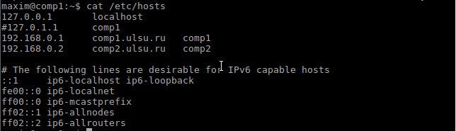
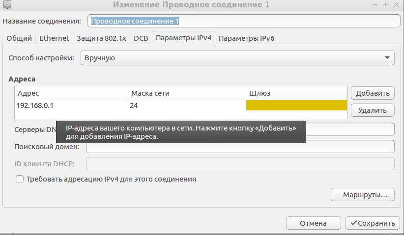
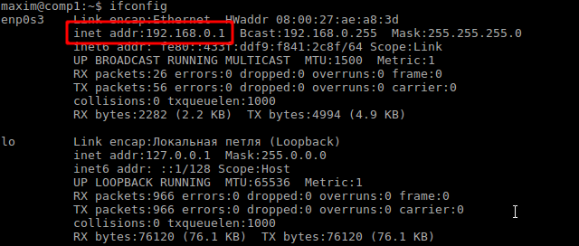
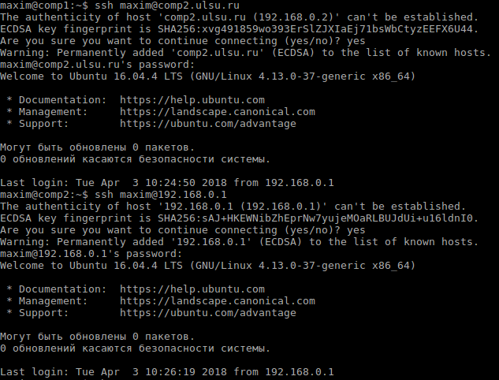
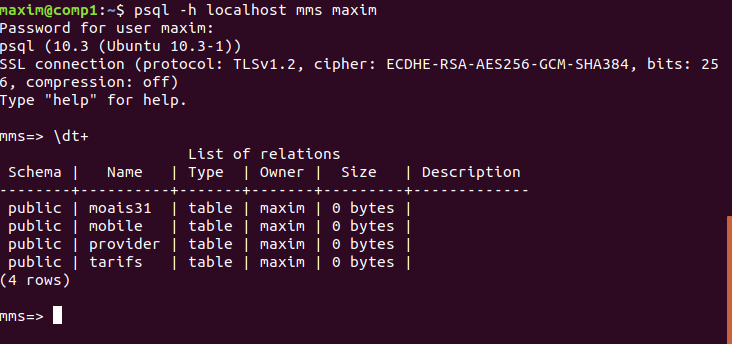

|
|
Лабораторная работа №2. Настройка локальной сети в условиях отсутствия DNS
Задание:
Необходимо получить стандартно работающую локальную сеть, в которой доступ к другому компьютеру локальной
сети обеспечивается:
а) при указании ip-адреса компьютера,
б) по полному имени компьютера,
в) по краткому имени компьютера.
1. Нужно отредактировать файл на 2 компьютерах по адресу
/etc/hosts и привести его к такому ввиду:

2. Настроить сеть


3. Установить и настроить
ssh
4. Подключиться

|
|
|
Лабораторная работа №3. Работа с СУБД PostgreSQL — удалённый терминальный доступ
Задание:
1. Создать таблицы: moais31, mobila, provider, tarifs
2. Настроить удаленный доступ к СУБД
1. Создание таблицы moais31
create table moais31
(
id int UNIQUE,
surName varchar(20) not null,
name varchar(20) not null,
patronymic varchar(20) not null,
yearBirth interval YEAR not null,
height int not null check(height>0),
weight int not null check(weight>0),
sex char(1) not null check(sex in ('м', 'ж')),
mobile_id int not null,
provider_id int not null,
tarifs_id varchar(50) not null,
CONSTRAINT moais31_pk PRIMARY KEY (id),
CONSTRAINT mobile_fk FOREIGN KEY
(mobile_id) REFERENCES mobile,
CONSTRAINT provider_fk FOREIGN KEY
(provider_id) REFERENCES provider,
CONSTRAINT tarifs_fk FOREIGN KEY
(tarifs_id) REFERENCES tarifs
)
2. Создание таблицы mobile
create table mobile
(
id int UNIQUE,
brand varchar(20) not null,
model varchar(50) not null,
battery int not null check(battery>0),
camera bool not null,
resolution int not null check(camera=true),
CONSTRAINT mobile_pk PRIMARY KEY (id)
)
3. Создание таблицы provider
create table provider
(
id int UNIQUE,
name varchar(20) not null,
site varchar(40) not null,
CONSTRAINT provider_pk PRIMARY KEY (id)
)
4. Создание таблицы tarifs
create table tarifs
(
name varchar(50) not null,
provider_id int not null,
speedIn int not null check(speedIn>0),
tarif varchar(20) not null,
CONSTRAINT tarif_id PRIMARY KEY (name),
CONSTRAINT provider_fk FOREIGN KEY
(provider_id) REFERENCES provider
)

5. Настройка удаленного подключения к СУБД
В первую очередь нужно разрешить подключаться к
postgresql с внешних
ip. Для этого находим файл
postgresql.conf
(у меня находится в папке
/etc/postgresql/10/main) и правим следующую строчку:
listen_addresses = '*'
Обратите внимание, что нужно убрать перед директивой
listen_addresses знак комментария #.
А в файле
pg_hba.conf (лежит в там же, что и
postgresql.conf) добавляем следующую строчку:
hostssl all maxim 0.0.0.0/0 md5
где:
hostssl - подключаемся через SSL
all - разрешаем подключение ко всем базам
maxim - имя пользователя, которому разрешаем подключение 0.0.0.0/0 - маска сети с которой
можно подключаться
md5 - способ шифрования пароля
|